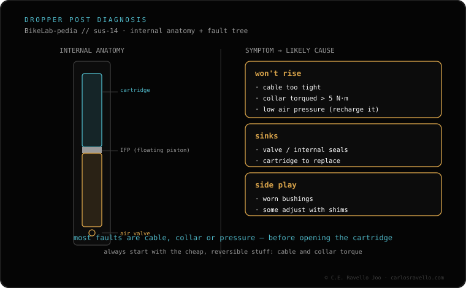

A dropper also needs maintenance. The basics: regularly clean and lubricate the tube and seals, which is what prevents stiction, play and sagging. The major service depends on the brand: on sealed cartridges (OneUp/PNW) you replace the cartridge; on some rebuildable posts, a seal kit. Neglect it and you'll end up with a post that won't go up or that sags when you sit down.
Most dropper faults aren't breakage: they're lack of cleaning. A short, regular service saves you the cartridge.

Tell us the model and the symptoms and we'll say whether it's cleaning, a seal kit or the cartridge. Message us on WhatsApp
Clean and lubricate the tube and seals regularly. The major service depends on brand and use: a sealed cartridge is replaced, a rebuildable post takes a seal kit.
Stiction, play and sagging when you sit down. Cleaning and lubricating in time prevents all three.
It depends: a sealed cartridge (OneUp/PNW) is replaced, not repaired; some rebuildable posts take a seal kit.
© 2026 BikeLab Studio. Content under CC BY 4.0: you may copy, translate and publish it, even for commercial purposes. Citation is mandatory. Without attribution, the license terminates automatically (CC BY 4.0, §6.a) and the use becomes copyright infringement: we request the removal of the content and its deindexing. · Design and ownership: Carlos Ravello Joo